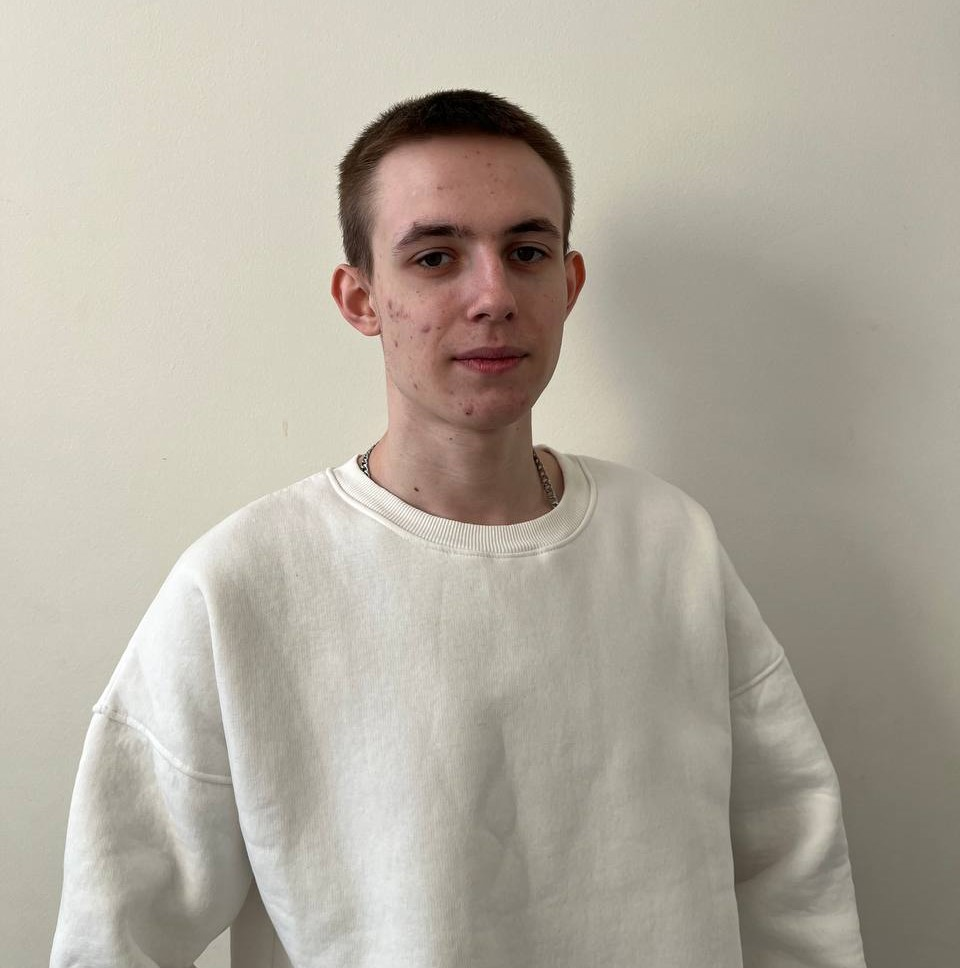
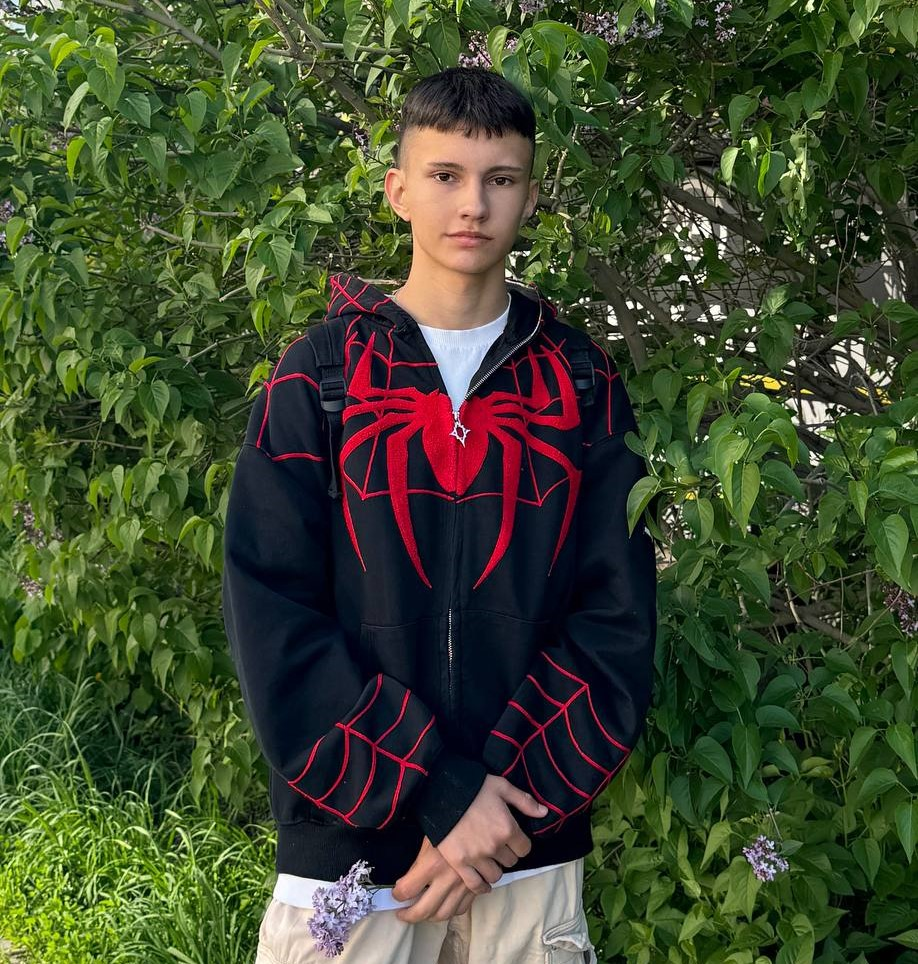
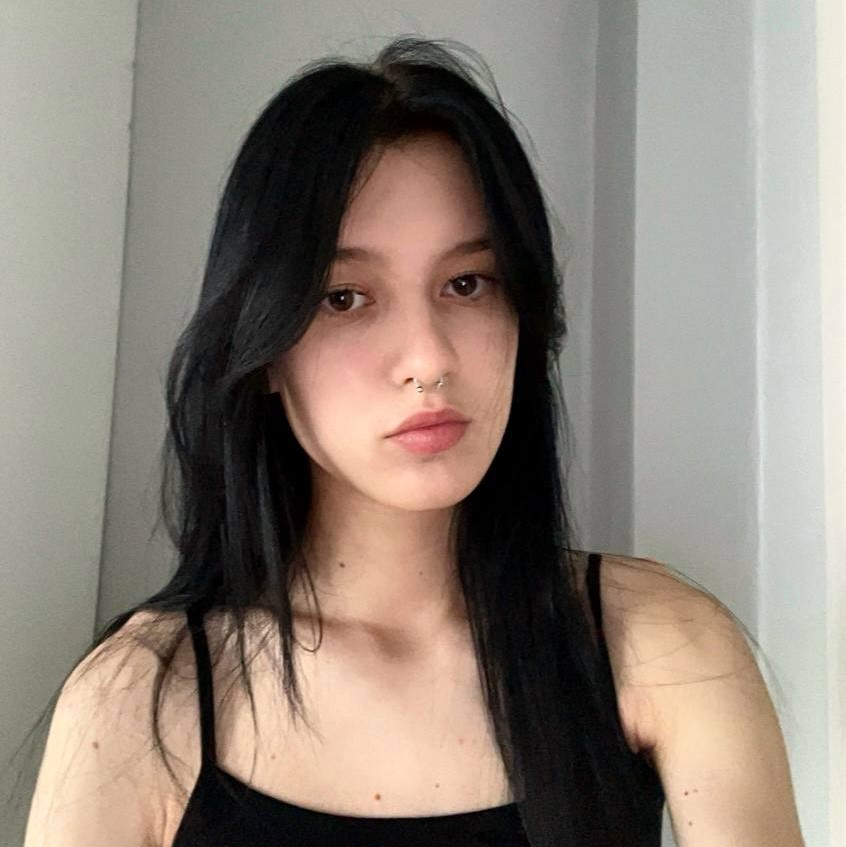

Project Manager Sergey
Project Manager. Мои сильные стороны включают умение эффективно планировать, координировать задачи и решать сложные проблемы благодаря аналитическому мышлению. Я успешно взаимодействую с коллегами и заказчиками благодаря отличным коммуникативным навыкам.
Frontend developer Ilona
Я начинающий веб-разработчик, в настоящее время работаю
менеджером по продажам, повышая свои коммуникативные навыки. Имею опыт работы в языках программирования C#, HTML, CSS и
JavaScript, а также навыки работы с Visual Studio Code, Microsoft
Visual Studio, GitHub. Уделяю особое внимание образованию в
области веб-разработки, владею английским языком на уровне B1. Увлекаюсь созданием графических элементов для медиа-платформ.

Designer Nikita
Я обладаю опытом работы в разработке ВК мини-приложений и создании сайтов на HTML и CSS. У меня есть опыт работы с React и Next.js, а также знание JavaScript и TypeScript. Благодаря моему аналитическому мышлению, я успешно планирую и координирую задачи, решаю сложные проблемы и эффективно взаимодействую с коллегами и заказчиками. Кроме того, у меня опыт работы в Figma, где я создаю различные макеты, и владею навыками работы с Photoshop и Illustrator.

React developer Yasmina
Я специализируюсь на верстке HTML и CSS, обладаю базовыми знаниями JavaScript/TypeScript и опытом работы с React и Next.js. Я отлично владею Tilda, успешно создавая проекты на этой платформе. Я продемонстрировала хорошее понимание веб-разработки и готова к новым вызовам в этой области.